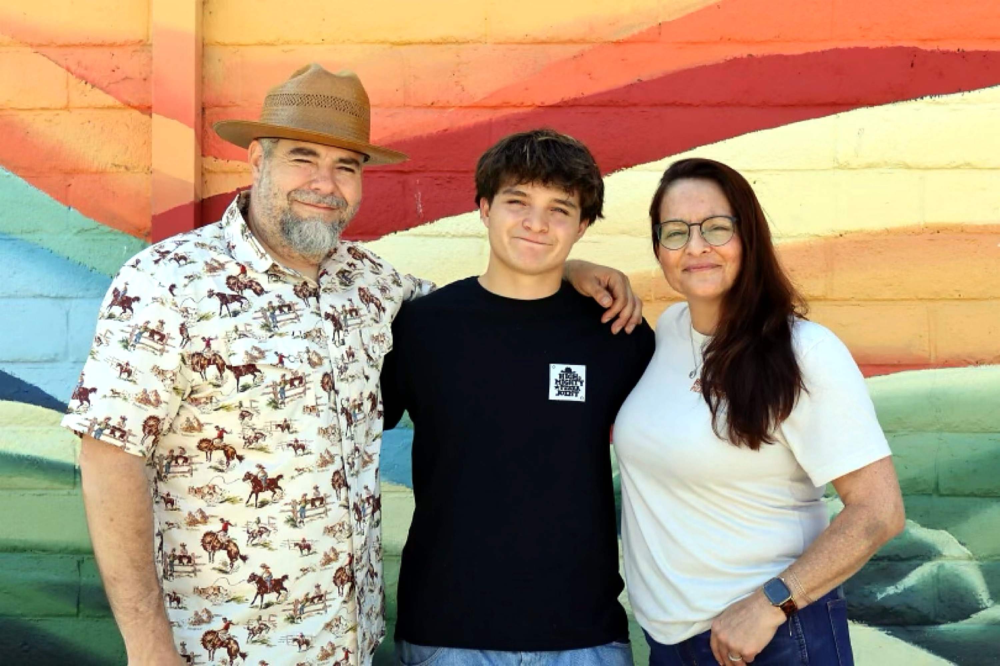

Eric Ingram
Ancora imparo. I am still learning.
I'm Eric Ingram, a builder, a serial restaurant founder, and a family man from Morgan Hill and Gilroy, California. I was born in 1977 at March Air Force Base in Riverside, California. I spent my youth growing up in Morgan Hill, California, and graduated from Live Oak High School in 1996.
I built these businesses alongside my father, who is my business partner, my best friend, and my mentor.
What we built as a family
The Ingrams of Morgan Hill and Gilroy, California
- 2002: My father purchased Trail Dust BBQ in Morgan Hill.
- 2006: Nickey and I purchased Trail Dust BBQ from him.
- 2009–2011: We founded Aptos St BBQ, Salinas City BBQ, and BBQ 152.
- 2013–2015: We founded Real Smoked BBQ, which grew to include Mission St BBQ and South Winchester BBQ.
- 2018–2024: We founded Promised Land Brewing Company. We sold it in 2024, and it's still thriving as a downtown Gilroy institution.
- 2024: After two years of building it out, we opened High & Mighty Pizza Joint, a Real Smoked BBQ company, on August 9, 2024.
- 2024–2026: We added BBQ Pit and Mt Diablo BBQ to the Real Smoked BBQ family of restaurants.
"The impediment to action advances action. What stands in the way becomes the way."— Marcus Aurelius, Meditations 5.20
Today I help run High & Mighty Pizza Joint with my wife Nickey and my son Alex. The goal is simple: real food, done right, served by people who care. Food is how we bring people together.
In 2026 we also started Real Easy Travels, a travel brand we built for fun and exploration, where we share trips that are simple, honest, and worth taking. We built it with AI so that Real Easy Travels can run almost completely on its own.
What I'm about
- Family first. Nickey, Alex, and my parents are the center of everything.
- Always learning. I love technology, self-exploration, and education. I use AI and new tools to work smarter and keep growing.
- Make the most of yourself. I try to show up fully every day and help the people around me do the same.
- Do good. I'd rather do the harder right thing than the easy wrong one.
- Faith and intention. I move toward what I want with purpose, not fear.
Make the most of yourself. Keep moving forward. Keep the fires burning.